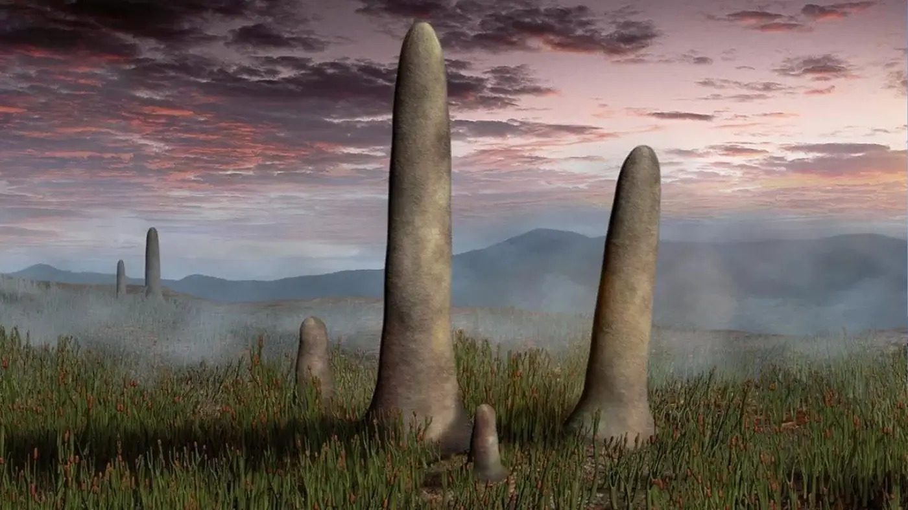
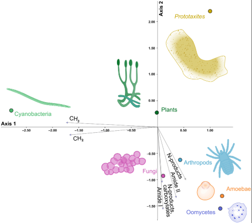

Prototaxites Fossil Discoveries of the Old Red Sandstone Formation in the UK
By Emery Grey, Torianne Austin, Scott Nicholson, Selin Morales

Background
Since the discovery of Prototaxites loganii by W.E. Logan in the Gaspé Peninsula in 1843, the exact category to put this species in has been heavily debated. At first it J. W. Dawson labled it as a rotted out trunk of a coniferous tree (Dawson, 1859). Later, W.M. Carruthers argued that it could not possibly be a tree. It had to be either a lichen, a fungi, or an algae (Carruthers, 1872). This began a century and a half of debating what exactly this misterious fossil could have been.
On January 21, 2026, an article was published providing evidnece that the structural and chemical differences that Prototaxites have that has sparked so much debate about what exactly it is is enough to identify it as it's own Kingdom (Lorin et al, 2026). Now that Prototaxites is no longer being forced into a prexisting box, scientists can learn more about what exactly it was, how it survived on land, and potentially learn more about early terrestrial ecosystems and evolution.


What We Know
Prototaxites fossils have been found primarily on formations created during the Late Silurian stage and through out the Devonian Period, which was when small flora and smaller invertabrates were just starting to move onto land. Prototaxites would have stood out on this landscape due to their unusually massive size. They were tall and cylindrical, standing up to 8 meters (26 feet) tall (Lorin et al, 2026), and about a meter (3 feet) in diameter (Huber).
What has confused scientists about how exactly to categorize Prototaxites is it's intricate structure of tubes. Dawson, the first to study Prototaxites fossils in Gaspé Bay, described them as "like mycelium of fungus" (Huber). It has been heavily debated whether these cells most resemble wood, algae, lichen, or fungus cells(Huber). This debate was put to rest when scientists were able to study the chemical composition of fossils. The carbon isotopes that are present in Prototaxites fossils (δ13C values) are incosnistant with what is typically found in fossils that rely on photosynthesis. This has led to debate about a potential symbiotic relationship that allowed Prototaxites to obtain energy and neutrients, but there has been no other organism discovered. This implies that Prototaxites were consumers which aligns it with the hypothesis that they were fungi. However, according to a study from January of 2026, there are no traces of chitin and β-glucan that is consistant with the fossils of consumers like fungi (Lorin et al, 2026). They suggest that this means that it was not a fungus or anything similar to modern organisms. Instead, it is it's own Kingdom.


Mapping the Locations of Prototaxites Fossils of the Old Red Sandstone Formation in the United Kingdom
Knowing that Prototaxites were most likely their own thing, understanding where they have been discovered can help us understand how various factors of the Devonian and Silurian period impacted Prototaxites evolution and extinction. However, when Emery looked into Prototaxites, they noticed that there was no readily available spatial data. They were able to go through several databases, studies, and journal articles in order to map out the locations of 88 Prototaxites fossil discoveries from North America, Europe, and Northern Africa, and document their species, geological age, and the geology, paleo environment, and paleoclimate of the formation they were found in. of the 87 fossils Emery found, 23 of them were in the UK. Because of this, we chose to narrow down our study area to the UK. We compared the locations of Prototaxites fossils to other Devonian and Silurian fossils and the bedrock of the Old Red Sandstone. We also analyzed the dates the fossils were discovered, the time that they would have existed, and the paleo environments and climates which were documented in the origional data set that Emery collected.Most of what Emery was able to find did not have the exact location of these discoveries which means that these are rough estimates of where these fossils may have been found as opposed to exact discovery locations, which made comparing the Prototaxites fossils discovery locations to anything else less precice than we would like it to be. But it's a start.
Prototaxites In Relation to Other Devonian and Silurian Fossils
By Emery Grey
The other Devonian and Silurian fossils were categorized by similar genuses. The first category is plants. Each plant type referenced in the map was a small, early form of terrestrial plant.
Angiosperme and Sphenophyta - terrestrial vascular flowering plant
Bryophyta - tiny sphere shaped terrestrial plant
Lycophyta - early vascular terrestrial plant
The second group were Arthropoda. The majority of arthropods at this point were aquatic. Myriapoda were the exception.
Myriapoda- terrestrial herbivorous millipede-like arthropoda
Chelicerata and Euthycarcinoidea - Predatory marine and shallow water early scorpions
Crustacea and Ostracoda - Small marine arthropoda
Trilobita - Tiny marine arthropoda
The last two groups were Fish and Molluska. Obviously, fish are aquatic. At this point all mollusks were aquatic as well.
Bivalvia - Mollusca with two half shells
Gastropoda - Muscular footed and well developed head
Nautilodea - Predatory curved marine mollusca
Ancathodii - Freshwater and marine carnivorous spiny sharks
Agnatha - Jawless bottom dwelling fish
Chondrichtyes - Shallow marine sharks
Conodonta - Eel-like jawless vertebrate scavangers and predators
Osteichthyes - Bony fish
Placodermi - Armored jawed predatory fish
All of the other fossils were also aquatic organisms.
Annelida - worms
Brachiopoda - bivalved marine animals
Bryozoa and Coelenterata - simple aquatic invertabrets
Echinodermata - starshaped aquatic inverabrets
Foraminifera - single celled marine organisms
Graptolithina - colonial marine organisms
Porifera - sponges
Ichnotaxa - trace fossils of animals
Pollen and Spores - trace fossils of plants
Prototaxites Timeline
By Scott Nicholson
Since 1859, roughly twenty-four different fossils of the Prototaxite species have been discovered within the United Kingdom.
AVG_MYA is the midpoint estimate of each fossil.
MIN_MYA = the youngest possible age
MAX_MYA = the oldest possible age
Prototaxites In Relation to Paleo Climates and Environments
By Selin Morales
The different types of paleoenvironments during the time of Prototaxites were marine, shallow marine, terrestrial, fluvial, wetlands, and deltaic
Fluvial environments saw a shift from dominant barren land systems to vegetated rivers which influenced by the evolution of land plants. Their landscape was sparsely covered by moss-like plants. There was still little organic stabilization of soils
Wetlands were restricted to coastal plains, productive coastal ecosystems, and inland areas around water bodies. Very early vascular plants were anchored to the substrate by rhizoid. They did not have deep roots.
Terrestrial paleoenvironments are categorized by the rise of large plants. Large plants resulted in more oxygen and created soil. This changed nutrient cycling and potentially fueled Late Devonian period marine extinctions. The terrestrial landscape was poor and life was restricted to coastal regions and wetlands.
Deltaic paleoenvironment saw high sea levels and warm climates. Widespread shallow seas created extensive carbonate platforms. They were populated by rugose and tabulate corals and stromatoporoids. Early vascular plants were able to takeover coastal lowlands.
Marine paleoenvironments were most prominent. They had warm, stable seas with diverse marine life. This time was characterized by higher sea levels with high inland seas and high frequency regression and transgressions.
The Old Red Sandstone was created during the late Silurian-late Devonian periods. It was the most prominent location of Prototaxites. There was a development of land plants in this area which had a major impact on the atmosphere and global climate Stabilized floodplains and a development of soils
Prototaxites In Relation to the Old Red Sandstone Lithology
By Torianne Austin
During the mid-Silurian, what is now considered the UK was underwater, an environment dominated by shallow marine reefs. As the Caledonian orogeny caused major uplift across the area from roughly 490-390 million years ago, the sea retreated and exposed land to the surface. By the Devonian, the landscape was full of terrestrial ecosystems including braided rivers, alluvial fans, and floodplains. This is where the most fossils were found among the rock units. To learn more about the different types of rock associated with this time click below!